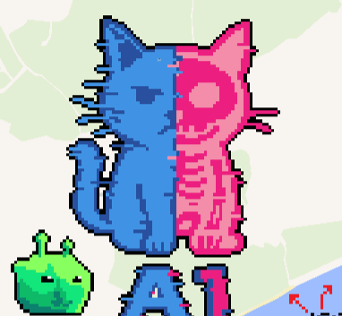
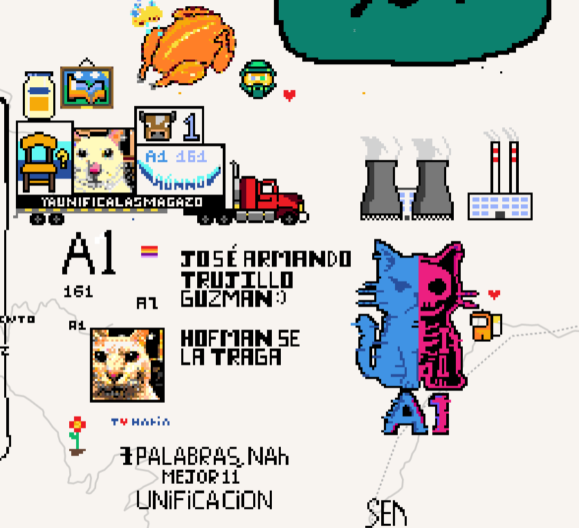
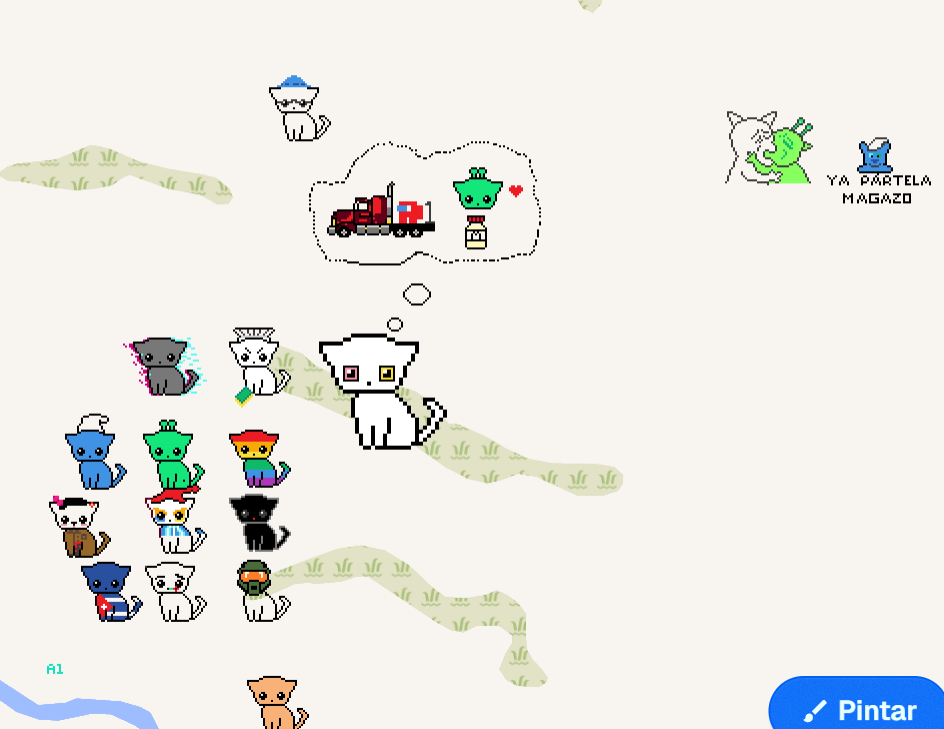
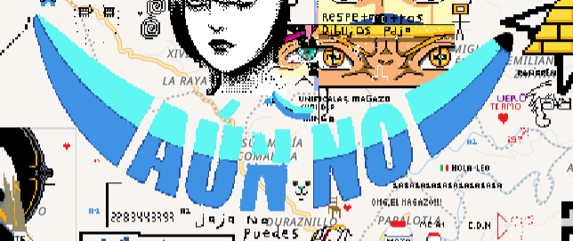
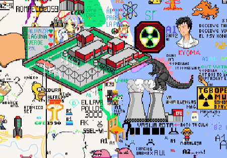

¡Esta seccion todavia no esta terminada al 100%!
Contruccion del Trujillo Cronomatico

Construccion de Trujillo Gay y Trujillo Halo

Contruccion de varios (Los Trujillos minis de alado son del Trujillo gay y el dibujo de Ximena y Trujillo prime es del Trujllo Pitufillo)

Logo del Admin

Contruccion de toda la comunidad (Laguna)(Aporte de toda la comunidad)
